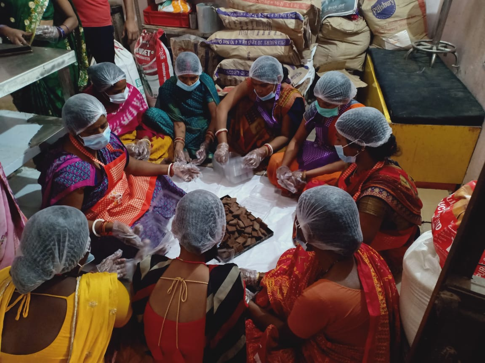
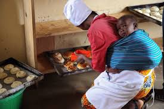

Baking Tutorials

1. Rural Baking Traditions: From Farm to Oven
In this video, we journey into rural communities where women continue to bake using time-honored methods passed down through generations...

2. Urban Baking: Sweet Creations in the City
Step into the vibrant world of urban baking, where women are turning their kitchens into creative hubs...

3. Baking for a Cause: Empowering Rural Women Through Pastries
This video showcases the incredible impact baking has in empowering women in rural areas...

4. Urban Baking Communities: Where Food and Friendship Meet
In this video, we explore the rise of baking communities in urban areas...